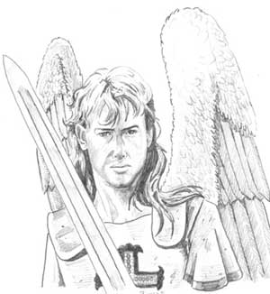
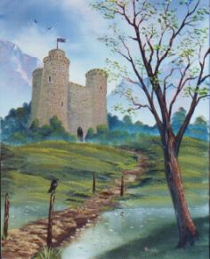

Notizie Generali
Questo culto tipico dell’età imperiale del Nordor è un culto della Fratellanza della Luce. Loky simboleggia il dio della gloria umana, dello studio e della scienza. Attraverso lo studio e l'utilizzo della mente gli esseri umani si elevano al più alto grado della scala evolutiva e possono osare tutto.
In base alla filosofia del culto è di
fondamentale importanza la creazione di grosse comunità poiché solo in una
grande comunità possono fiorire le accademie e le università sede di scienze e
di cultura. Inoltre solo una grossa comunità ha la possibilità di difendersi
efficacemente e di espandersi per diffondere la sua cultura e le sue credenze ai
popoli che sono meno sviluppati. La comunità si deve fondare sul rispetto
reciproco e su un ordinamento equo, non sono ammessi eccessi burocratici e
cavilli legislativi, inoltre le leggi sono fatte per essere rispettate ma
possono mutare seguendo l’orientamento culturale del popolo e lo sviluppo
delle scienze anche giuridiche. L'essere umano con l'utilizzo della tecnica e
della scienza sottomette la natura e la manipola creando migliori condizioni per
sfamare la propria comunità e difenderla dai fenomeni naturali nocivi. Le
campagne danno il cibo alle città ma da questi centri sede del sapere e culla
della civiltà devono sempre dipendere
Descrizioni
raffiguranti la divinità
Loky ha le sembianze di un uomo molto anziano, dal volto scolpito da profonde ma delicate rughe che ne mostrano l'incredibile saggezza ed esperienza. Ha i capelli brizzolati e la barba grigia folta e ben curata. Indossa una toga bianca, classica veste degli studiosi e degli uomini di cultura, non porta alcuna arma e non ha alcuna ferita. Nella mano destra porta un tomo di pergamene, con il braccio alzato e proteso in avanti, simboleggiando così il desiderio di espandere la conoscenza e la gloria della comunità. Al suo collo pende un medaglione di Loky d’oro lucente e con gemme scintillanti.
Semi-dei
Si tratta di semi-divinità molto antiche e potenti. Che una divinità abbia sotto la sua egida tante semi-divinità così forti e adorate non è comune. L'immensa saggezza di Loky e l'incredibile stima che le semi-divinità hanno della loro divinità possono spiegare il fenomeno.
Kilna
: Semi-Dea della letteratura e dell’oratoria. E’ una anziana donna umana che
secondo la leggenda in una antica tribù salvò il tesoro culturale della sua
comunità da un pauroso incendio appiccato da un orda di barbari invasori, nel
fare ciò però si ustionò quasi totalmente e le fiamme le devastarono il corpo
brutalmente, imponendogli una vita di dolore e solitudine. Dea protettrice delle
biblioteche e degli studi letterari e anche la dea della retorica e dell’arte
oratoria .
Zeia
: Semi-Dea della matematica e della scienza sperimentale. Una giovane donna
molto bella e dal corpo slanciato e snello. I suoi capelli sono bianchi e i suoi occhi risplendono di una lucentezza assoluta. E’ la semi-dea
dell’intelligenza e della ragione. E’ la musa degli scienziati e difende le
opere dell’ingegno. Ogni volta che ad esempio viene varata una nuova nave,
viene invocata Zeia, viene adorata dagli esploratori e da tutti coloro che non
si limitano a studiare ma apportano nuove conoscenze di qualunque genere alla
cultura di un popolo. E' adorata anche dagli studiosi di magia che aderiscono al
culto di Loky.
Kian
: Giovane Semi-Dio dell’apprendistato e della gioventù. E’ un giovane uomo
senza barba e con una tunica da pedagogo. Secondo la legenda questo ragazzo si
diede all’insegnamento da giovane e provenendo da una ricca famiglia lo fece
gratuitamente. Rinunziò al potere e alla ricchezza, per insegnare ai giovani
poveri la dolcezza della letteratura e della poesia. E’ dunque invocato dagli
studenti prima degli esami e negli studi, ma è anche il dio degli apprendisti
al lavoro, come i giovani garzoni e fabbri, e dunque il dio di chiunque voglia
cimentarsi nell’apprendere nuove nozioni ed insegnamenti. Inoltre è il
semi-dio dei poeti e della poesia, per lui fonte di felicità insieme alle altre
arti come la musica (è quindi anche musa dei compositori).
Minori
Spiriti
delle scienze
: Sono spiriti di grande potenza, ognuno dei quali ha l’obbligo di custodire i
segreti di una scienza, quindi per ogni scienza ve ne è uno. Ognuno di loro
conosce perfettamente i segreti della propria scienza e li conserva inviandoli
poi agli uomini quando Loky decide che è giunto il momento e a chi inviarle , a questo punto interverrà uno Spirito illuminatore.
Spiriti di luce : Sono i “soldati di Loky” i suoi inviati e i suoi messaggeri simboleggiano la luce della cultura che sconfigge le tenebre dell’ignoranza si dividono in , Spiriti illuminatori inviati da Loky per illuminare la mente degli uomini , e Angeli difensori, veri e propri soldati che hanno il compito di difendere la cultura e le comunità.

Compiti dei chierici e dei fedeli
Diffondere la cultura e prendesi cura
della comunità.
Obblighi e regole comportamentali dei chierici
Non uccidere alcuna creatura se non è
strettamene necessario. Salvare e preservare i tomi, i libri e tutte le forme di
cultura. Incitare allo studio e alla riflessione.
Organizzazione del Culto su Arelia
I giovani priest sono chiamati Monaci , studiano in un monastero o un collegio religioso. Si occupano di tutte le faccende del tempio e della copia di antichi tomi e documenti. I Monaci sono coordinati dal Gran Chierico che si occupa di una zona o comunità piccola con la sua confraternita. Per divenire Gran Chierico occorre una certa esperienza (5° livello) e una anzianità di almeno 30 anni, una volta raggiunti questi requisiti si viene nominati al grado superiore e si acquisiscono i privilegi religiosi che spettano ai Gran Chierici. Il Superiore del Gran Chierico è l’Anziano Maestro che comanda una zona territorialmente grande chiamata Saggia Amministrazione che contiene a sua volta più confraternite. Per divenirlo i requisiti sono essere un Gran Chierico molto esperto (livello minimo 8°) e aver raggiunto i 50 anni di anzianità. Fra gli Anziani Maestri del culto hanno il ruolo di comando quelli più anziani che ottengono una Saggia Amministrazione mentre gli altri svolgono funzioni importanti e hanno comunque il titolo di Anziano Maestro pur restando per esempio a guidare una confraternita. Fra tutti gli Anziani Maestri quello più potente e anziano è il Grande Saggio del Culto (cliccare per visionare la lista dei Grandi Saggi) ossia il vero capo spirituale del culto di Loky. E’ colui che effettivamente comanda e può destituire e sostituire o spostare anche gli Anziani Maestri che siano rei di gravi peccati, crea sul territorio le Sagge Amministrazioni. Il Grande Saggio del Culto scrive le regole che tutti i membri della fede di Loky devono seguire in importanti documenti chiamati Vera Voce del Culto di Loky.
In ogni comunità
esiste un tempio e le grandi città ne hanno più di uno, ma più che di templi
o chiese, questi possono assumere la forma di grandi biblioteche, collegi e
musei, con dentro poi le sale di culto e la cappella, sono quindi chiamate confraternite e ognuna di queste è guidata dal Gran Chierico
sotto l’influenza del monastero più vicino dove inviano nuovi materiali e
oggetti d’arte. Gli Anziani Maestri invece possono costruirsi un monastero in
luoghi difficilmente accessibili (il culto finanzia per il 60 % delle spese di
edificazione iniziali). Questi monasteri servono per custodire i tesori delle
arti e delle scienze e sono quindi fortezze inespugnabili con camere segrete e
guarnigioni difensive. Gli Anziani Maestri possono ordinare Monaci e Difensori
della fede.

I Difensori della fede sono i paladini (classe = paladini ) di Loky rigorosamente Lawful Good. Sono le armi del culto e sono utilizzati per difendersi dai pericoli esterni. Si dividono in Guardie del Culto sotto l’influenza del monastero di appartenenza che svolgono una funzione di braccio armato e di difesa del culto (fino al 6° livello divise in Guardia 1°\2° liv., Alta Guardia 3°\4° liv. e Somma Guardia 5°\6° liv.), hanno quattro mesi all’anno da dedicare obbligatoriamente alla divinità e quindi all’Anziano Maestro e in Spade della fede (dal 7° livello) che sono liberi di diffondere per il mondo la fede , la giustizia e la cultura senza più dover dedicare obbligatoriamente 4 mesi all'Anziano Maestro che li ha nominati. Il culto fornisce loro equipaggiamento normale (comprese armature alle Guardie Chain Mail, alle Alte Guardie Bandend Mail, Somme Guardie Plate Mail e dopo Field Plate Mail, le riparazioni delle corazze sono a spese del difensore della fede) e vitto e alloggio se necessario nei mesi che dedicano al monastero.Simboli fondamentali del culto
Medaglione di
Loky
( Simbolo sacro ): Questo medaglione è
costituito da cinque cerchi d’oro. Un cerchio grande centrale con una gemma
trasparente e pura (nei medaglioni degli Anziani Maestri è un diamante) che
simboleggia il dio Loky e quattro cerchi più piccoli posti a croce. Il cerchio
di sopra ha una gemma rossa trasparente (rubino) e simboleggia Zeia,
quello di destra ha una gemma azzurra trasparente (acqua marina) e simboleggia Kilna,
quello di sinistra ha una gemma verde trasparente (smeraldo)
e simboleggia Kian, quello di sotto ha una gemma bianca piena (una perla)
e simboleggia Sepsa.
Il Tomo
sacro :
Sono i libri fondamentali del culto di Loky , ogni Anziano Maestro li possiede e
li conosce, devono trovarsi nella zona
di meditazione delle
confraternite in modo che i
fedeli possano consultarli. Il primo volume chiamato il
Lokran è il libro del dio e deì semi-dei e delle
creature divine. Vi sono informazioni sul culto e sulla dimora degli dei, parla
inoltre degli spiriti degli uomini che dopo la vita cadranno nelle tenebre degli
inferi se evil ma dei good solo coloro che si saranno elevati dall’ ignoranza
potranno raggiungere il Lanar
(il paradiso di Loky) ove otterranno l’ onniscienza. Coloro che
invece saranno rimasti nell’ozio dell’ignoranza troveranno posto solo lungo
la Kallia ,
lunghissima strada di luce che conduce fino al Lonar,
ma che è lunga come l’infinito per cui saranno costretti a camminare fino a
che nella notte
della luce Loky non deciderà di accettarli nel Lonar.
Segue un grosso volume di filosofia
chiamato il Libro
dell’essere dove vi sono pensieri di grandi filosofi imperiali,
è una raccolta di filosofie di vita che vanno accolte dal culto di Loky.
Seguono i Sette
volumi del sapere, una vera e propria enciclopedia del sapere. Vi
sono descritte le piante e gli esseri viventi , le scienze di base come la
matematica e la fisica , non trovano posto le creature degli altri piani e i non
morti.
Ogni Anziano Maestro può aggiungere ai Sette
Volumi (ognuno dei quali è quindi costituito da più testi) nuove
nozioni se però ottiene il consenso del Saggio del Culto.
Dopo i Sette
Volumi vi sono i Tomi
della parola, pratici tomi per ogni lingua, per ogni lingua vi
sono tre libri : una grammatica con le regole, un dizionario, è una raccolta di
letteratura originale di quella lingua. Sono un gioiello quelli in Alto Elfico.
Poi vi è il Libro
dell’uomo costituito oramai da molti volumi. Parla della storia
del culto e dell’Impero del Nordor, con nozioni di altra storia areliana.
Viene costantemente aggiornato ogni anno con un annuario dal Saggio del Culto.
Infine vi è l’Azanot o
volume della fine. Un testo piccolo che parla della morte terrena e ne vuole
enfatizzare e sdrammatizzare la venuta. Alcuni passi e capitoli dell'Azanot
parlano dell'immortalità terrena e della non-vita, si tratta di volumi non
ufficiali del culto che anzi spesso sono considerate eresie. Questi capitoli
sono stati scritti da Anziani Maestri deviati dalla fede e la loro lettura si
dice sia nefasta.
Schema di gioco
Allineamento
Divinità : Neutral Good
Chierici :
Qualsiasi Good
Difensori della fede :
Lawful Good
Seguaci : Tutti
tranne Neutral Evil o Chaotic Evil
Abilità
minime richieste
Saggezza 12 ( con una sola 16 o + = + 5%
Xp )
Intelligenza 12 ( con una entrambe 16 o
+ = + 10% Xp )
Razze
permesse
Umani, 1\2 elfi, Halfling, (e in teoria
chiunque voglia vivere in una comunità così organizzata)
Difensori della fede = Solo umani
NonWeapon Proficiencies ( priest, general )
Bonus =
Reading\Writing
Required
= Religion
Raccomandate = Scribe, Healing, Local History, Ancient History, Monster Lore, Undead Lore, Demonology.
Difensori della fede
(bonus) =
Weapon Proficiencies
Required
= Nessuna
Difensori della fede (required) = Una spada di dimensioni medie o grandi.
Armi
e armature permesse
Solo la cuoio o cuoio rinforzata o vesti
imbottite (no quindi hide)
Nessuno scudo
Armi = Quarterstaff, Sling
Difensori della fede
= Nessuna
limitazione
Poteri
speciali
Momento di flusso dell'energia divina: Il momento utilizzato da Loky è il momento di massimo splendore del sole (ore 12.00).
Scacciare gli Undead : Senza alcuna deroga alle regole basi.
Maestria nelle Pergamene : I chierici di Loky pagano il 50% dei punti competenza richiesti per imparare la competenza Scribe (questo beneficio non si applica agli slot successivi richiesti per migliorare la prova nella competenza). I chierici di Loky, inoltre, hanno più possibilità di ottenere il potere divino quando utilizzano una qualsiasi pergamena clericale ricevendo un bonus del 5% alla prova richiesta per valutare la compatibilità del culto (link). Nessun beneficio è, invece, loro concesso sulla prova relativa alla differenza di livello.
Creare pergamene clericali a partire dal 1° livello di esperienza.
Costruire il Lume della Conoscenza al 7° livello
Creare pozioni magiche a partire dal 9° livello
Creare oggetti magici a partire dall'11° livello
Chamber
of Automatons
| Livello del chierico | Tipo di Automa | Tempo di costruzione | Costo di costruzione |
| 5° livello | Wood | 2 mesi | 2500 g.p. |
| 6° livello | Copper | 3 mesi | 3500 g.p. |
| 7° livello | Bronze | 3 mesi | 5000 g.p. |
| 8° livello | Stone | 4 mesi | 4000 g.p. |
| 9° livello | Iron | 4 mesi | 6000 g.p. |
| 10° livello | Steel | 5 mesi | 10000 g.p. |
Per le statistiche dei vari automi consultare il mostruario in questo sito.
Il tempo di costruzione non deve essere continuo e può essere diviso dal chierico come meglio crede. Il costo di costruzione è il costo dei materiali e deve essere versato prima di poter iniziare i lavori di costruzione.
Controllo degli Automi.
Solo il chierico che ha costruito un automa può controllarlo. Essendo costruiti non intelligenti (valore di intelligenza - Non 0) costoro hanno una memoria di durata infinita ma molto piccola per cui possono ricordare un unico ordine alla volta anche per mille anni. L'ordine impartibile ad un automa deve essere semplice. In particolare, l'ordine deve essere intrinsecamente semplice nel senso che la sua formulazione deve rientrare in un massimo di 10 parole. Un ordine più lungo metterà l'automa in difficoltà impedendogli, di fatto, di eseguirlo. Anche l'azione ordinata all'automa deve essere semplice. Essendo, infatti, l'automa una creatura non dotata di intelligenza, costui potrà eseguire ordini diretti ma non ordini che richiedano un ragionamento o l'adozione di decisioni (seppure semplici) per essere eseguiti.
Un chierico può mantenere sotto controllo un ammontare massimo di automi i cui dadi vita totali non siano superiori al livello di esperienza dello stesso moltiplicato per 1,5 (arrotondando il risultato per difetto). Ad esempio, un chierico di 7° livello di esperienza potrà mantenere sotto controllo un ammontare di automi pari a 9 dadi vita. Si noti che un chierico non può costruire un automa se non dispone di un ammontare di dadi vita liberi tali da assicurarne il controllo. Un chierico, però, può sempre distruggere un qualsiasi automa sia sotto il suo controllo per costruirne e controllarne uno diverso. Un automa può essere distrutto fisicamente (in combattimento) oppure dal suo creatore nella sala degli automi impiegando un giorno di lavoro per dado vita base dello stesso. In quest'ultimo caso il chierico recupererà un ammontare di reagenti utilizzabile unicamente per la produzione di altri automi che è pari al 33% del costo base dell'automa distrutto.
Un automa che in fase di
costruzione è stato
abbellito con incisioni in argento (+15% al costo di costruzione) conta 1 dado
vita in meno
Riparare un automa danneggiato.
Tutti gli automi danneggiati possono essere riparati esclusivamente nella chamber of automatons. Automi che raggiungono un valore pari od inferiori a 0 di punti ferita si considereranno definitivamente rotti e non potranno essere riparati. Il costo di riparazione per ogni punto ferita perso dall'automa corrisponde ad un ammontare di monete d'oro di materiali pari al valore totale dell'automa (ottenuto dalla somma del costo di costruzione e di tutte le migliorie applicate) diviso 100. Con un giorno di lavoro il chierico di Loky può riparare 1 punto ferita perso dall'automa.
Advanced
Chamber
of Automatons
| Livello del chierico | Tipo di Implementazione | Costo di costruzione |
| 6° livello | Wood | 1000 g.p. |
| 7° livello | Copper | 2000 g.p. |
| 8° livello | Bronze | 2500 g.p. |
| 9° livello | Stone | 3000 g.p. |
| 10° livello | Iron | 4000 g.p. |
| 11° livello | Steel | 5000 g.p. |
Una volta comprate le strutture avanzate per la stanza per un determinato tipo di automi potrà nella camera sottoporre a migliorie tutti gli automi di quel determinato tipo abbia creato in precedenza. Le migliorie si distinguono in migliorie comuni, ossia applicabili a tutti gli automi, e migliorie specifiche, ossia proprie di ogni tipologia di automi. Le migliorie comuni sono le tre seguenti, un singolo automa può essere soggetto a tutte le migliorie previste :
Apporre placche di rinforzo: Una volta applicate queste placche di rinforzo l'automa avrà il massimo dei punti ferita possibile per i suoi dadi vita (ossia 8 punti ferita a dado vita). Apporre le placche ad un automa richiede sempre un tempo di 1 mese ma il costo cambia a seconda del tipo di automa al quale vuole applicarsi questa miglioria, come riportato nel seguente schema:
| Tipo di automa | Costo delle placche |
| Wood | 500 g.p. |
| Copper | 1000 g.p. |
| Bronze | 1500 g.p. |
| Stone | 2000 g.p. |
| Iron | 3000 g.p. |
| Steel | 4000 g.p. |
Lubrificazione delle
articolazioni meccaniche: Applicata questa miglioria il movimento
dell'automa passerà da fattore movimento 9 a fattore movimento 12.
Questa miglioria si applica applicando degli speciali lubrificanti e grassi a
lunga durata e levigando alcune superfici di attrito. Applicare questa
miglioria necessita di 20 giorni di lavoro, ciò
indipendentemente dal tipo di automa che si vuole rendere più rapido.
| Tipo di automa | Costo della lubrificazione |
| Wood | 250 g.p. |
| Copper | 400 g.p. |
| Bronze | 600 g.p. |
| Stone | 900 g.p. |
| Iron | 1350 g.p. |
| Steel | 2000 g.p. |
Appesantimento degli arti
superiori: Una volta effettuata questa miglioria le braccia dell'automa
saranno più pesanti ma ugualmente equilibrate. Per questo motivo l'automa avrà
un bonus di +1 (appesantimento minore) o di +2
| Tipo di automa | Costo dell'appesantimento minore (+1 danni) | |
| Wood | 300 g.p. | non disponibile |
| Copper | 500 g.p. | 1000 g.p. |
| Bronze | 750 g.p. | 1500 g.p. |
| Stone | 1250 g.p. | 2250 g.p. |
| Iron | 1800 g.p. | 3500 g.p. |
| Steel | 2750 g.p. | 5000 g.p. |
Irrigidimento del metallo
| Tipo di automa | Costo delle placche | Ammontare di riduzione del danno |
| Copper | 500 g.p. | 1 danno per ogni attacco non magico |
| Bronze | 750 g.p. |
|
| Stone | 1250 g.p. |
|
| Iron | 2000 g.p. |
|
| Steel | 3500 g.p. |
|
Le migliorie specifiche, invece, variano per ogni tipo di automa e sfruttano la particolare composizione dello stesso. Le migliorie sono le seguenti :
Wood Automaton - Data la flessibilità e la leggerezza di questo automa è possibile migliorarlo utilizzando legno di qualità elevatissima e trattato nella camera degli automi in modo da risultare eccezionalmente flessibile. Una volto sottoposto a questa miglioria i movimenti delle braccia dell'automa di legno diventano particolarmente veloci e lo stesso guadagna un attacco extra al round potendo effettuare un terzo colpo di pugno alla fine di ogni round di combattimento esclusivamente nei confronti di una creatura già attaccata nel medesimo round con uno dei suoi attacchi. Il costo per questa miglioria è di 1000 g.p. e il tempo per applicarla è di 1 mese di lavoro.
Punti del Sapere Sacro
- Studio degli Esseri Mostruosi: Quando il chierico di Loky, in una
situazione ritenuta impegnativa ad insindacabile giudizio del Dungeon Master,
utilizza con successo una competenza tra
Monster Lore,
Undead Lore
e Demonology,
al fine di analizzare una creatura mostruosa che gli si trova di fronte, ed
ottiene il miglior risultato possibile (
Incantesimi
Si tratta di incantesimi che hanno tutti a che fare con il bene, e focalizzano il loro potere sulla difesa della comunità e delle cose, sulla conoscenza e sulle scienze.
Nota di ruolo: Il Culto di Loky ha disposto che gli incantesimi possano essere lanciati solo dietro il pagamento di una somma di denaro che venga utilizzata per il bene del Culto e per il grande obiettivo della ricostruzione dell'Impero del Nordor. Dal 115 p.n. inflictus è in vigore una Vera Voce del Culto di Loky sul costo degli incantesimi che regola la materia.
Incantesimi generali (Player's Handbook,Tome of Magic,Spell and Magic,Necromancers)
Gli incantesimi in azzurro sono quelli cui hanno accesso i Difensori della Fede.
1° livello
|
Analyze Balance |
|
Calculate |
|
Call Upon Faith |
|
Combine |
|
Cure Light Wounds |
|
Detect Magi |
|
Detect Poison |
|
Emotion Read |
|
Invisibility to Undead |
|
Know Age |
|
Know Time |
|
Light |
|
Personal Reading |
|
Protection from Chaos |
|
Protection from Evil |
|
Ring of Hands |
|
Speak with Astral Traveler |
|
Thought Capture |
2° livello
|
|
|
Cure Moderate Wounds |
|
Detect Charm |
| Detect Curse |
|
Ethereal Barrier |
|
Find Traps |
|
Idea |
|
Moment |
|
Silence 15’ |
|
Withdraw |
|
Wyvern Watch |
3° livello
|
Continual Light |
|
Cure Blindness & Deafness |
| Cure Disease |
| Cure Severe Wounds |
|
Detect Spirits |
|
Dispel Magic |
|
Efficaceus Monster Wards |
|
Invisibility Purge |
|
Line of Protection |
|
Locate Object |
|
Moment Reading |
|
Negative Plane Protection |
| Protection from Evil 10' radius |
|
Speak with Dead |
4° livello
|
|
|
Cure
Serious Wounds |
|
Dimensional
Anchor |
|
Dimensional
Folding |
|
Focus |
|
Genius |
|
|
|
|
|
Protection from Traps |
|
Tongues |
|
Uplift
|
5° livello
| Commune |
|
Impregnable Mind |
|
Dimensional
Translocation |
|
Other
Time
|
|
Cure
Critical Wounds |
|
Truee
Seeing |
|
Age
Object |
|
Barrier
of Retention |
|
Consequency
|
|
Elemental
Forbidance |
|
Meld
|
|
Repeat
Action |
|
Shrierking
Walls |
|
Thought Wave |
|
Undead
Ward |
Incantesimi speciali (Unici della divinità)
1° livello
|
Candle of the Reader
|
|
Enemy Detection |
| Item Origin |
|
Loky Preservation |
|
Loky Protected Library |
| Object Tracker |
| Prevent Spoilage |
| Stop Bleeding |
2° livello
|
Analyze Mechanical Devices
|
|
Detect Disease |
| Detect Hidden Creatures |
| Dispel Scent |
| Kian Learning |
| Languages Understanting |
| Lesser Apparence |
| Loky Comunicator |
| Loky Secret Code |
| Loky Sentinel |
| Protected Lock |
|
Rank Observer |
|
|
| Spread Healing |
| Stone Passage |
| Time Counter |
| Weapon Skill |
3° livello
|
Cilindric Barrier |
|
Creature
Locator |
| Item Vision |
| Mechanical Jammer |
| Owl of Zeia |
| Silver Inscription |
| Zeia Invention |
4° livello
|
Animated Defensor |
|
Area
of Security |
|
|
| Sacral Defence |
| Seal of Loky |
| Zeia Concentration |